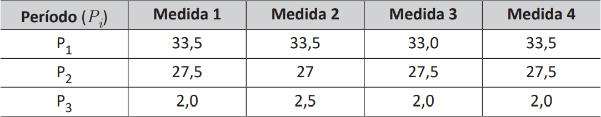

Uma estação de monitoramento de temperatura utiliza um termógrafo para registrar continuamente em um gráfico os valores detectados por seus sensores. Um determinado ambiente foi monitorado ao longo de três períodos distintos de um dia. O ambiente é considerado apropriado para um experimento científico se, para qualquer período Pi de monitoramento σ(Pi ) ≤ 2, em que σ(Pi ) denota o desvio padrão populacional do período Pi em que o ambiente foi monitorado.
As medidas de temperatura em °C, obtidas após um processo de quantização do sinal, são apresentadas na tabela a seguir.
A fim de automatizar o processamento dos sinais, o algoritmo a seguir foi desenvolvido, tendo como entrada um período e como resultado um valor booleano que indica se o período é apropriado ou não.
Algoritmo: viavel( )
entrada: : um período
saída : um valor booleano que indica se é apropriado para o experimento
)
entrada: : um período
saída : um valor booleano que indica se é apropriado para o experimento
 para
para  faça
faça
) \times (p - AVG(P))) //
//  denota a média de
fim
retorna
denota a média de
fim
retorna 
Com base no caso apresentado, avalie as afirmações a seguir.
É correto apenas o que se afirma em